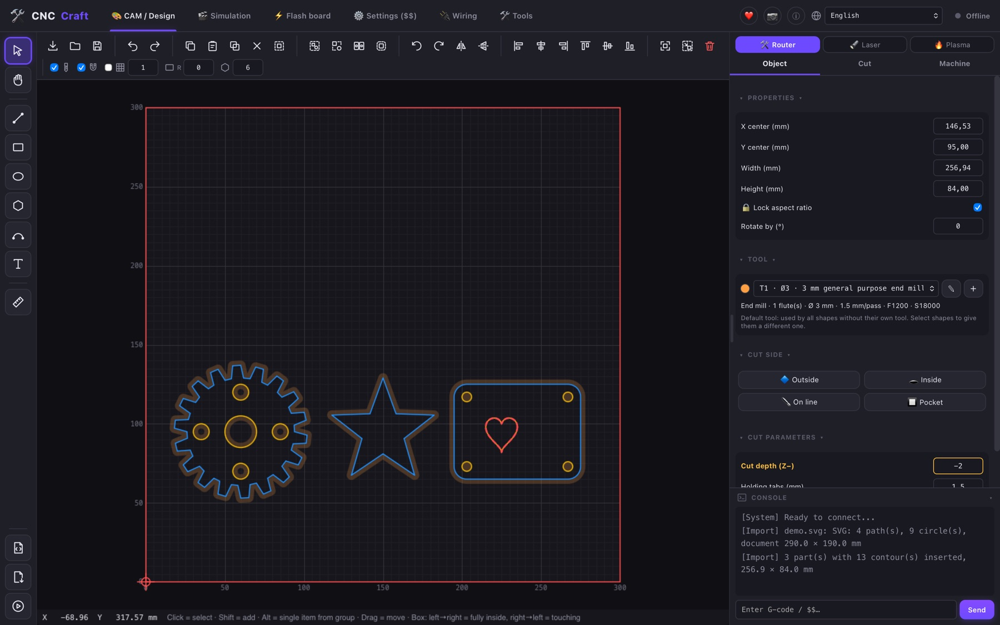
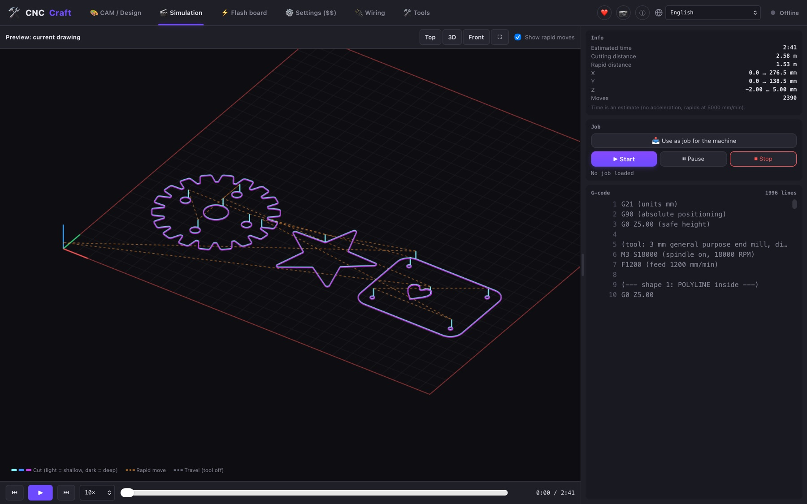
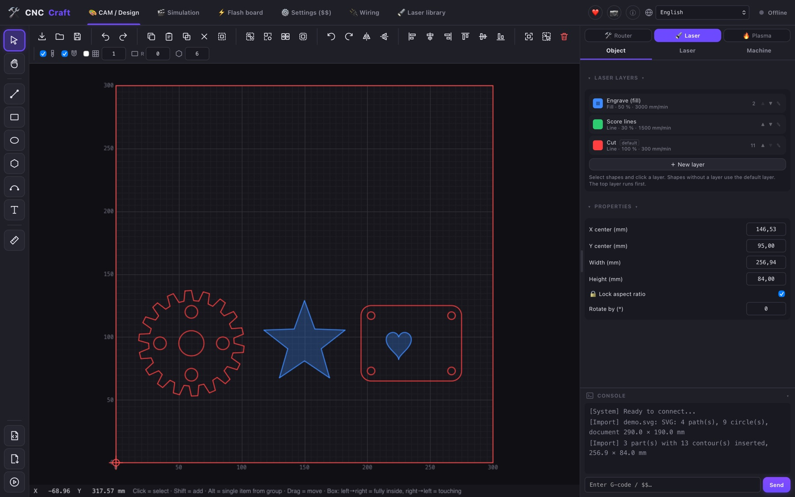
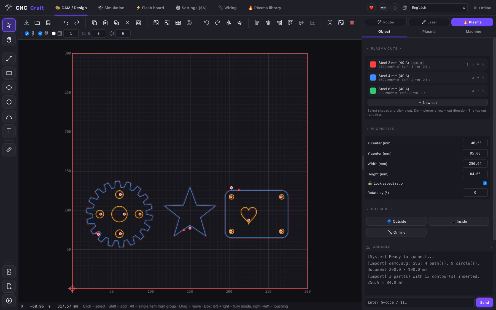
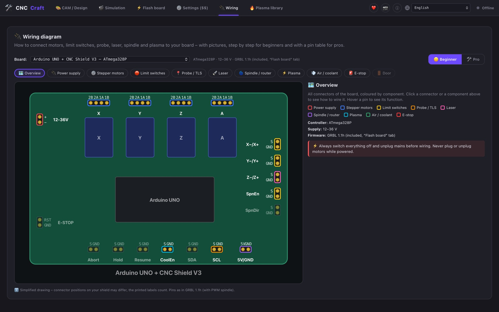

Laser, CNC router & plasma.
One free app.
Design, CAM and machine control in one program – like LightBurn, Estlcam and OpenBuilds together. Open source, no subscription, no account.

Everything from drawing to the finished part
Draw or import, create toolpaths, check the simulation and send the job – without switching between programs.
Design & import
Draw shapes and text or import SVG, DXF, PDF, PLT, images and 3D models (STL, 3MF, STEP).
CAM for CNC routers
Outside, inside, pocket and engrave with a tool library – as simple as in Estlcam.
Laser layers
Fill, line and cut with their own power and speed, lead-ins for cuts – like layers in LightBurn.
Plasma cutting
Kerf compensation, lead-ins, pierce points, sheet height probing and torch height control (THC).
3D simulation
See every move, the time and the G-code before the machine starts.
Machine control
GRBL, grblHAL, FluidNC, Grbl_ESP32 via USB or Wi-Fi, Marlin, Ruida (CO₂) and K40. Several machines at once.
Camera
USB or IP camera: watch the job and place your design on the live image of the workpiece.
Wi-Fi setup
Find machines on the network and set up the board's Wi-Fi right from the app.
Board tools
Machine settings ($$) explained in plain words, flash firmware (ESP32, Arduino, grblHAL) and wiring diagrams.
Remnant sheets
Used areas are remembered – parts placed on them are not cut again.
Private
No telemetry, no account, no cloud. Your drawings stay on your computer.
Updates in the app
One click to update – signed updates straight from GitHub.
Built for makers
CNC Craft combines what usually needs three programs:
Screenshots
Click a picture to enlarge it.




Download
Free for everyone. Latest version: see GitHub. All files and older versions are on GitHub Releases.
🍎 macOS
⬇ Apple chip (M1–M4) · .dmg⬇ Intel · .dmg🪟 Windows
⬇ Installer · .exe⬇ Installer · .msi🐧 Linux
⬇ AppImage⬇ Debian/Ubuntu · .deb⬇ Fedora/openSUSE · .rpm⚠️ Safety first
- Never leave a laser running unattended – wear laser safety glasses and keep a fire extinguisher ready.
- Every machine needs a real hardware emergency stop. The stop buttons in the software do not replace it.
- Test new jobs without a workpiece or at low power first. CNC Craft is beta software and comes without warranty.
Frequently asked questions
Is CNC Craft really free?
Yes. CNC Craft is open source under the GPL-3.0 license. All features are free, there is no paid version and no subscription.
Which machines and controllers are supported?
Laser engravers, CNC routers and plasma cutters with GRBL, grblHAL, FluidNC or Grbl_ESP32 (USB and Wi-Fi), Marlin, Ruida CO₂ controllers and K40 lasers (M2 Nano). Boards like the MKS DLC32 and Arduino with CNC Shield are well tested.
Is it a replacement for LightBurn or Estlcam?
CNC Craft is a free alternative with a similar workflow: laser layers like in LightBurn, router toolpaths like in Estlcam and machine control like in OpenBuilds. It is not affiliated with these products.
Does it run on Mac and Linux?
Yes – macOS (Apple chip and Intel), Windows 10/11 and Linux (AppImage, .deb, .rpm).
Is it still in development?
Yes, CNC Craft is in beta and gets new features regularly. Bug reports and ideas are welcome on GitHub.
Support CNC Craft
CNC Craft is free and stays free. If it helps you, you can support the development – or simply give it a star and tell others about it.